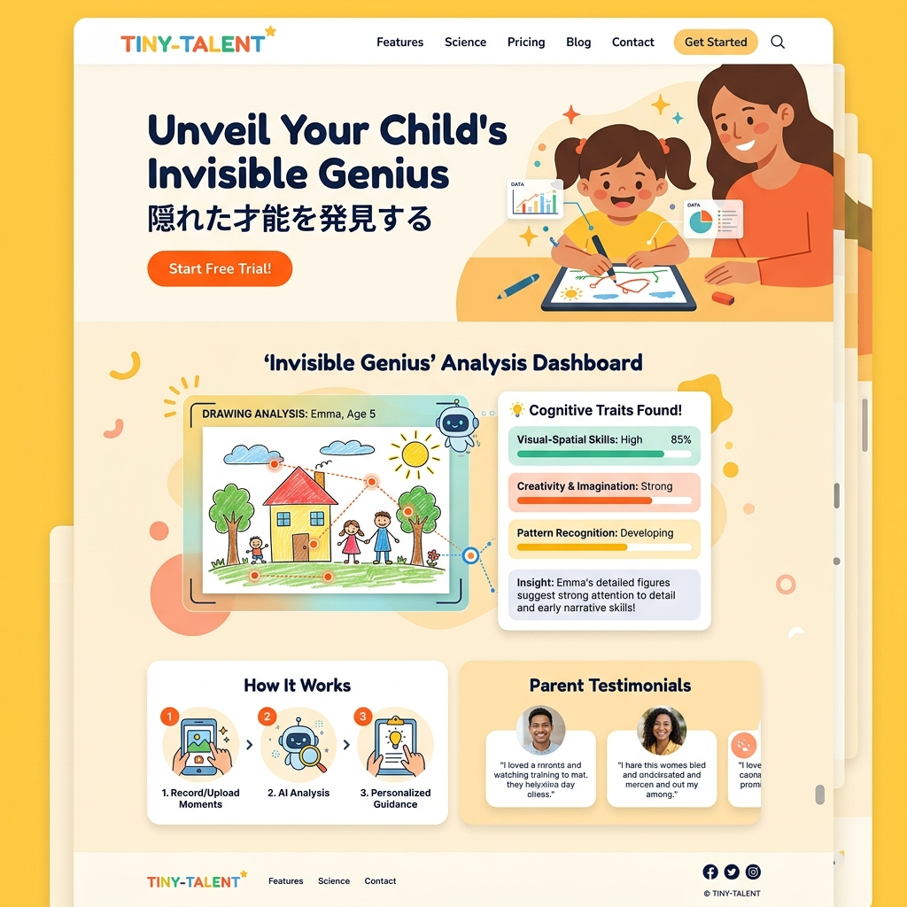

お絵かきから、
我が子の「隠れた天才性」を見抜く。
「うちの子は落ち着きがない」—それは欠点ではなく、並外れた空間認識能力の裏返しかも。AIが子供の日常の遊びや描画プロセスを解析し、独自の才能を発掘します。

大人の「正解」に、子供を当てはめない。
IQテストや学力偏差値は、子供が持つポテンシャルのごく一部しか反映していません。TINY-TALENTが着目するのは「無意識の遊び」。ブロックの積み方、クレヨンの筆圧、絵を描く順番。そこには、将来のクリエイターやエンジニア、アーティストとなる萌芽が確実に隠されています。
結果論ではない、「過程」を解析するAI
ストローク解析技術
完成した絵ではなく、描くプロセス（筆圧、速度、色の選択順）を独自アルゴリズムで分析し、認知バイアスを測定。
マルチモーダル行動認識
カメラ越しにブロック遊びやパズルのアプローチを解析。仮説検証のサイクル速度や空間把握力を見抜きます。
自然言語発達トラッキング
日常の会話の中で頻出する語彙の傾向をマッピングし、並外れた興味の方向性や論理構築力を可視化。
「才能のレーダーチャート」が日々進化する
子供の成長は一直線ではありません。TINY-TALENTのダッシュボードは、空間認識、言語理解、芸術性、論理的思考などの認知特性をリアルタイムで3Dグラフ化。得意な部分が突出していくプロセスを、親が一目で理解できる視覚的な体験として提供します。
才能に直結する、パーソナライズ知育
「すごい才能がある」と分かっただけでは終わりません。データ分析に基づき、その子の「今、一番伸びる力」を極限まで刺激する知育玩具やオリジナル絵本を毎月最適化してお届けします。市販のおもちゃ選びで迷い、無駄な投資をする必要はもうありません。
Case 01 | 5歳のEmilyの軌跡
『一つの遊びに集中できない』と悩んでいたご両親。しかしAIは、彼女がブロックを組み立てる際の「特異な立体把握能力と、破壊して再構築するサイクルの速さ」を検知。空間設計に特化した教材を推奨したところ、5歳にして複雑な幾何学構造のアートを作り上げるようになりました。
一生使える「才能のポートフォリオ」
幼少期の純粋なデータは、将来の学習カリキュラムの選択や、得意分野の発見において最も強力なポートフォリオになります。TINY-TALENTは、子供の一生の武器となるデータをブロックチェーンで安全に蓄積し、未来へのパスポートを構築します。